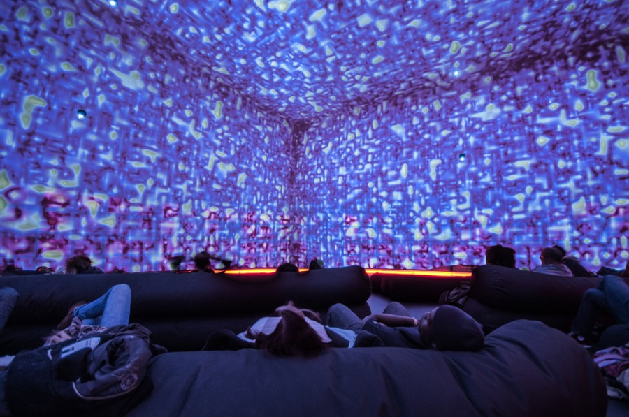

Blockchain
A blockchain is a shared database that is managed by a global network of computers. Information held in the database is distributed and continually reconciled by the computers in the network. The computers are often referred to as nodes, miners, or peers. Whatever they’re called, the computers are creating and maintaining their blockchain by validating and transmitting entries. And entries are the data that is published by the users of the network. Often this data represents the movement of cryptocurrency from one user of the network to another user of the network.Most blockchains are not controlled by any single entity and do not have a single point of failure. All the entries are viewable by the whole network. When data is entered in a blockchain, it can’t be removed. It’s there forever. The innovation of blockchains that makes them different from a normal database is that they achieve agreement on the history by sharing and restricting the entries without a central server or authority. Learn More about Blockchain here.
Autonomous Things
Autonomous things, abbreviated AuT, or the Internet of autonomous things, abbreviated as IoAT, is an emerging term for the technological developments that are expected to bring computers into the physical environment as autonomous entities without human direction, freely moving and interacting with humans and other objects.Self-navigating drones are the first AuT technology in (limited) deployment. It is expected that the first mass-deployment of AuT technologies will be the autonomous car, generally expected to be available around 2020.Other currently expected AuT technologies include home robotics (e.g., machines that provide care for the elderly, infirm or young), and military robots (air, land or sea autonomous machines with information-collection or target-attack capabilities).AuT technologies share many common traits, which justify the common notation. They are all based on recent breakthroughs in the domains of (deep) machine learning and artificial intelligence.They all require extensive and prompt regulatory developments to specify the requirements from them and to license and manage their deployment (see the further reading below). And they all require unprecedented levels of safety (e.g., automobile safety) and security, to overcome concerns about the potential negative impact of the new technology. Learn More about Autonomous things here.

Immersive experiences
An immersive experience is an illusory environment that completely surrounds you such that you feel that you are inside it and part of it. The term is associated with technology environments that command the senses such as virtual reality and mixed reality.The Future of Content programme was designed to inspire and develop innovative digital experiences for BBC online around specific themes that suit how our audiences are behaving; considering what audiences will be seeing, feeling and doing. We’ve been exploring the technologies we can add to our creative armoury and examine what they can add to the content we create. The programme has been providing the complimentary expertise needed to design these experiences and the platform to try it out in front of our audiences. Learn More about Immersive experiences here
